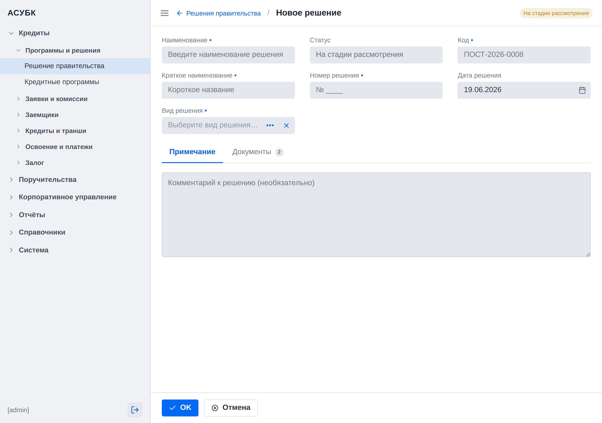

Запрет будущих дат: дата решения не может быть позже сегодняшнего дня
🟠 Средний приоритетСвязан: дефекты P1-04, P1-11
Документ для согласования · Версия 1.0 · 20.06.2026 · Тестовая среда https://fkftest.okmot.kg/
Содержание
Назначение задачи
Как сейчас (проблема)
Что предлагаем
Правила и поведение
Как это увидит пользователь
Критерии приёмки
Открытые вопросы
1. Назначение задачи
«Дата решения» — это дата фактически принятого юридического акта. Логически
она не может быть в будущем: решение, которое ещё не принято, не существует. Сейчас
система допускает ввод будущих дат, что приводит к недостоверным данным в
карточке решения и в отчётности. Задача — закрыть эту возможность валидацией.
2. Как сейчас (проблема)
Факт (проверено 2026-06-17). Календарь и поле «Дата решения» принимают
будущие даты: пикер предлагает будущие годы (2027–2029+), а вручную введённая
31.12.2030 принимается в поле (P1-04, P1-11 — UI-сторона).
Серверная валидация при сохранении не тестировалась, чтобы не создавать мусорные
данные на тестовом стенде.
3. Что предлагаем
Запретить будущие даты: «Дата решения» не может быть позже сегодняшнего дня.
Валидацию выполнять на клиенте И на сервере — чтобы ограничение нельзя было
обойти ни через интерфейс, ни через API.
4. Правила и поведение
Параметр
Правило
Верхняя граница
«Дата решения» ≤ сегодня (будущие даты запрещены).
Нижняя граница
Пока не вводим.
Клиент
Календарь не даёт выбрать будущую дату (будущие дни/годы недоступны).
Сервер
Проверка при сохранении — чтобы нельзя было обойти через API.
Сообщение
При попытке ввести будущую дату — внятное сообщение «Дата решения не может быть в будущем», а не молчаливый сброс.
5. Как это увидит пользователь
1Открыть форму
Открыть форму создания или редактирования решения.
2Календарь
В календаре «Дата решения» будущие даты
недоступны для выбора.
3Ручной ввод
При ручном вводе будущей даты появляется сообщение
«Дата решения не может быть в будущем».
4Сохранение
Сохранение с будущей датой отклоняется и на сервере
(защита от обхода через API).
Совет. Ограничение касается только решения; у кредитных программ
будущие даты допустимы (см. Фаза 2, P2-R2) — это разные правила.

Как должно выглядеть: поле «Дата решения» — выбор будущих дат недоступен (макет mockups/decision/decision-create.html).
6. Критерии приёмки
Календарь блокирует выбор дат позже сегодняшней.
Ручной ввод будущей даты отклоняется с сообщением.
Серверная проверка отклоняет будущую дату при сохранении (в т.ч. через API).
Сообщение об ошибке понятное, без молчаливого сброса.
Нижняя граница не ограничивается.
7. Открытые вопросы
Учитывать ли часовой пояс при определении «сегодня» (сервер vs клиент)?
Нужна ли в будущем нижняя граница (напр. не раньше даты основания фонда)?